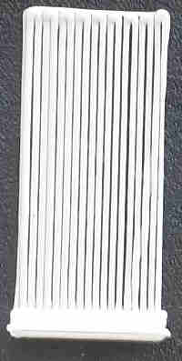
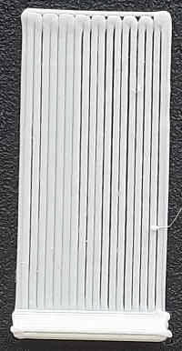
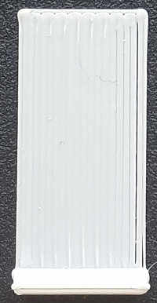
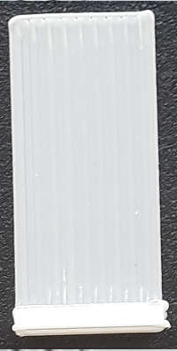
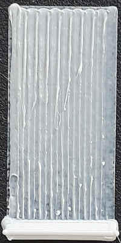
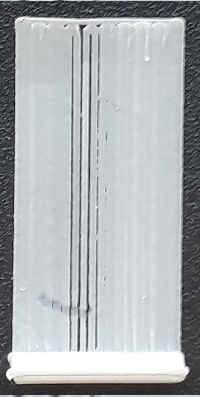
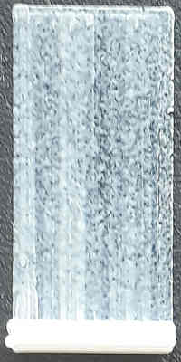

Calibration de la hauteur du plateau |
besoin : rien |
Cette calibration est la première à faire car elle est nécessaire pour qu'une impression adhère bien au plateau d'impression.
Cette calibration est faite pour effectuer un réglage fin. Veuillez mettre l'imprimante à niveau avant de commencer et placer la buse à 0,2 mm au-dessus du plateau. Vous devez être capable de déplacer un papier entre la buse et le plateau, mais vous devez être capable de sentir la buse la toucher. Après cela, vous devriez être capable de niveler le plateau avec une précision de ~0,1mm.
Tout d'abord, sélectionnez votre imprimante et votre profil d'impression par défaut avec le profil de filament pour le filament que vous avez. Notez que cette calibration ne fonctionne qu'avec votre première extrudeuse si vous en avez plusieurs.
En cliquant sur le bouton Générer, le programme va créer et découper l'impression de test. Vous devez l'envoyer à votre imprimante et l'imprimer. Une fois l'impression terminée, vérifiez le résultat des cinq plaques par rapport aux photos ci-dessous. Vous devrez régler votre imprimante/logiciel pour corriger la hauteur si nécessaire.
Pour plus d'informations, lisez les notes et conseils ci-dessous.
|  |  |  |  |  |  |  |
| Beaucoup trop loin | Trop loin | Trop loin: Vous pouvez repérer un petit écart |
Parfait | Trop près | Avertissement! C'est trop près: vérifier l'épaisseur avec vos doigts! |
Beaucoup trop près Dangerous for the bed |
Si votre imprimante a des vis de plateau, Utilisez-les pour lever ou abaisser le plateau correspondant à la pièce à ajuster. N'oubliez pas de réimprimer le test après l'ajustement pour vérifier la compensation. Faites attention, car la plupart du temps, un demi-tour correspond à 0,2 mm de réglage en hauteur, ce qui correspond généralement à la hauteur de la première couche. Si vous élevez le plateau, ne tournez jamais plus que cela et ne réglez généralement qu'un quart de tour au maximum.
S'il n'y a pas de vis de plateau, vous devez utiliser le logiciel ou modifier la configuration du micrologiciel. Reportez-vous au manuel de votre imprimante.
Si votre filament a du mal à adhérer au plateau, vous pouvez essayer :
Ce test utilise la hauteur actuelle de votre première couche, mais vous pouvez l'augmenter jusqu'à 80 % de la hauteur de votre buse (avant d'utiliser 'générer') si c'est la première fois que vous nivelez votre plateau afin de réduire le risque d'un accident de collision avec la buse.
Si, après l'étalonnage du débit du filament, il apparaît que le débit était très mauvais, vous voudrez peut-être refaire cet étalonnage une autre fois.
La plupart des calibrations doivent être effectués dans le bon ordre. C'est le premier à faire. Mais si vous voulez obtenir de bons résultats, vous devez calibrer votre extrudeuse. Par exemple, si vous lui demandez d'extruder 100 mm de filament, c'est exactement la longueur de filament que l'extrudeuse doit pousser dans la buse.
Ce test définit le paramètre "Compléter les objets individuels" sur vrai, donc vous pouvez vouloir réinitialiser vos paramètres d'impression par la suite.
Licence pour les modèles utilisés pour cet essai de calibration: CC BY-SA 3.0